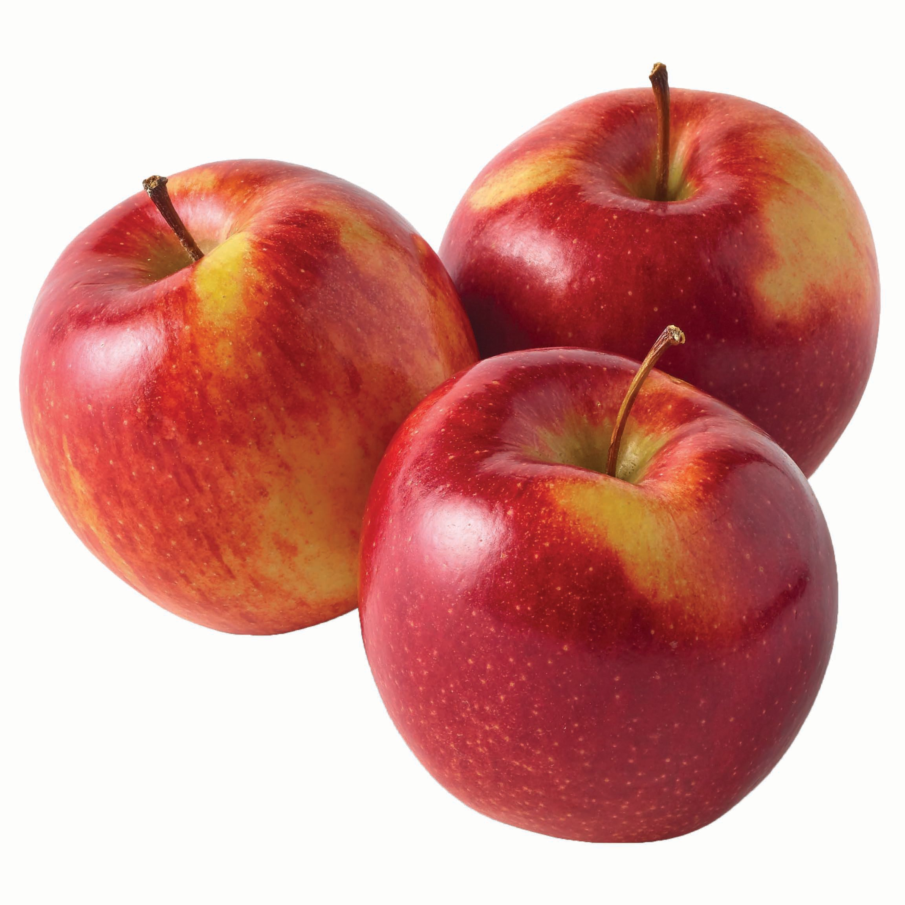

Welcome to the Apples Page. This post is written to demonstrate the combined use cases of Smart Script and Unified Deep Linking (UDL). We will build on top of the standard smart script with a little help from additional javascript function.

The button below is embeded with OneLink without any deep link value. If an existing app user clicks on the link, the user will be sent to the homescreen.
The button below is embeded with OneLink with a deep link value according to the website URL. If an existing app user clicks on the link, the user will be sent to the specific page according to the current page.
We can utilizewindow.location- a javascript method to automatically pick up the current landing page URL.
Let's started with
var page_url = window.location.pathname
this will return you the page_urlto be
From here you can use var path_url = page_url.split("/fruits/") to split the path into 2, and extract the fruit name in the latter part using
path_url[1], which will return you
Now, we can clean up the.htmlwithvar dp_value = path_url[1].replace(".html","")There, you will have
Lastly, because thedeep_link_valueparameter that the app accepts for the fruit name has to start with capital letter, we use the trick
dp_value.charAt(0).toUpperCase() + dp_value.slice(1)
This will return you the exact format needed for the application, .
This technique allows a website developer to dynamically generate the OneLink outgoing links equipped with the deeplink capability to direct the existing users to the desired in-app landing pages according to their needs without hard-coding the deeplink value.